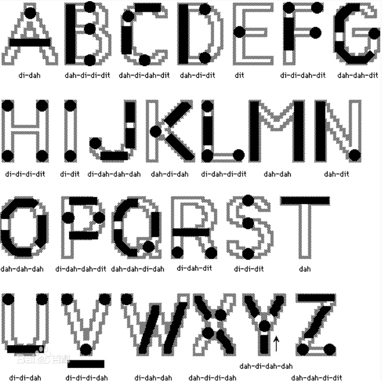
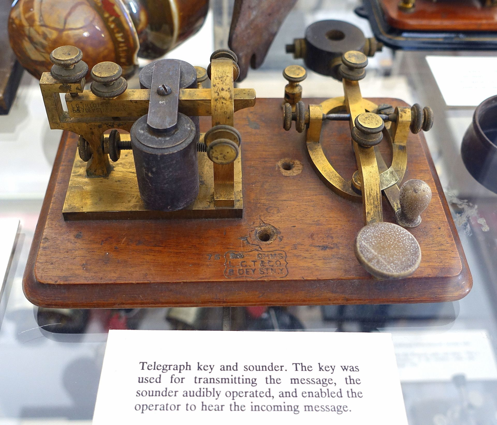
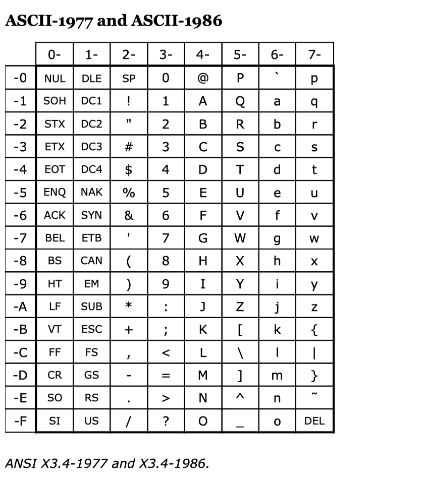
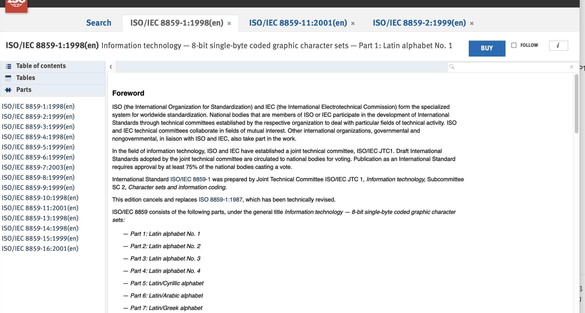

作者:luomgf
时间:2022/02/16
转载请注明出处:https://www.cnblogs.com/luomgf/p/15904688.html
图文并茂,请访问:http://luomgf.com/16443998998895.html
1、目标
希望你看过后能够明白世间的一切乱码问题,能够明白天下主要字符集的招式讨论. 本次据介绍字符集,我想达到如下的目标,概括来讲就是,写明字符集是怎么产生的,最早的ASCII码是怎么来的,到后面unicode/gb2312/gb18030他们是怎么编码和设计的的,utf8的编码原理,这些字符集的发展伴随了国际那些标准的发布,中国是如何跟进的,发布了那些标准.字符又是怎么被显示出来的,如何显示当今宇宙最复杂的汉字biang.c/python/编程语言和终端是怎么处理字符集问题,字符集怎么转换如何实现等等. 字符集背后隐藏的那些计算机基础知识和发展历史. 欢迎一键三联,支持写下去,当然如若你还有其他想了解的关于字符集的知识趣事可以在评论区留言告诉我,我可以更新进其中.
1.1、字符集
- 字符集的定义
- 常见字符集及登记字符集
- 2.1. ASCII码字符集
- 2.2. 扩展ASCII码字符集
- 2.3. GB2312字符集
- 2.4. GB18030字符集
- 2.5. unicode字符集
- 2.6. utf8存储方式
- 字符集涵盖知识
- 字符编码规则区位/多平面/单字节
- 字符编码存储16进制/ucs2/ucs4
1.2、字形
- 字体矢量/点阵
- 格式truetype/opentype
常见平台软件语言对于字符集的处理
- python语言
- python是怎么支持unicode的,怎么实现utf8和unicode转换
- python是怎么实现各种编码转换的
- c语言怎么处理字符集
- wchar_t是个啥
- linux内核的点阵字体了解吗
1.3、 应用
- 宇宙最复杂汉字怎么在你的电脑上面显示出来
- 宇宙最复杂汉字怎么在你的点阵嵌入式设备上面显示出来
- 文本乱码
- 汉化
- 编码序列化传输
- 网络传输,字符流与字节流
- 终端一般怎么解决字符集,怎么检查乱码,用nc命令模拟,反查
- vim乱码问题怎么处理
1.1、编写python程序库
- 点阵字符程序
- 显示hzk字库点阵字符
- 显示任意字符点阵字符
- 输出任意字符点阵字模
- 创建gb2312/gb18030字符集字库
- 字符集编码程序
- 编码转换,仿照iconv
- 打印某编码特征信息
- gb2312/gb18030 打印区位,国标码
- utf8打印二进制编码
- unicode打印平面
编写c/c++程序
2、字符集
2.1、基本介绍
字符集就是用用一个特定的数字去代表一个字符字形,从而形成的一系列数字构成的数据集合,即为字符集.
《Windows程序设计》1这本书当中,作者基本上介绍了ASCII字符集和UNICODE字符集以及C语言与WINDOWS编程处理字符集问题的技巧,算是比较全的.所以可以推荐读者看看这部分内容.《C Primer Plus》2这本书当中介绍了如何处理宽字符.
ASCII码介绍
标准的ASCII码是一共128个的,由7位编码组成的字符集. 他主要区分的是ANSI标准和iso标准,ANSI标准是美国信息标准,ISO标准是考虑了全球的拉丁文的标准. iso8859-1的的0x00-0x7F就是对应US-ASCII码.
ASCII发展历史时间线和事件
ASCII码定义开始于1963年,最近一次修订是1986年.ASCII的编码字符集思想来源如果要进行追踪,可以追寻到1837年摩尔斯电码,可以说摩尔斯电码是字符集的祖先.
在国外的这篇文章3和维基百科4中,作者列举了ASCII码发布标准的版本,摘录如下:
- ASA X3.4-1963
- ASA X3.4-1965 (approved, but not published, nevertheless used by IBM 2260 & 2265 Display Stations and IBM 2848 Display Control)
- USAS X3.4-1967
- USAS X3.4-1968
- ANSI X3.4-1977
- ANSI X3.4-1986
- ANSI X3.4-1986 (R1992)
- ANSI X3.4-1986 (R1997)
- ANSI INCITS 4-1986 (R2002)
- ANSI INCITS 4-1986 (R2007)
- (ANSI) INCITS 4-1986
- (ANSI) INCITS 4-1986
编码的发展主要故事
上面列举了ASCII码的发展历史时间线,下面对其发展历程中一些主要的事件做一些介绍
- 1838年-1854年,摩尔斯电码,字母用点和横线编码
这是字母编码字形图

这是从字符自然顺序给的编码表

这是从编码设计的角度给出编码规则

这张图我们仔细观察就会发现其实是一个二叉树,特点:常用字符编码短,每个父节点下的做节点为“.”右节点为“-”,以此类推进行编码.当然这个结论我在书中还没有得到证实,有那部书有这个提法.
作为最早的字符集,在中文里面也有字符集,威基杰的《电报新书》就是最早基于康熙字典的字符集.
电码形成的电文,用的是类似电视上那种滴滴嗒嗒的机器来发射的. 
当然我们一些抗战题材中的密码传送也是这个原理,但是他不是用的摩尔斯电码,因为其是明码,谁都能看懂,所以每个军事单位就字节发明字符集,形成电码.然后电视上面抢来抢去的密码本就是字符集.
- 20世纪50年代末,ASCII开始兴起 这个时期编码开始出现雏形,但标准不统一.
- 1963年,第一版ASCII码由美国定义ASA X3.4-1963, 该版ASCII码是第一个由美国国家标准学会定义发布的有记录标准.如下是标准的封面页和设计页,详细内容请看扫描文件5
封面
 设计
设计


-
1967年,定义ASCII码. 在1967年,算是定义了ASCII码,也比较接近现在的ASCII码定义.

-
1986年,ANSI X3.4-1986 这也是最近一次美国官方ASCII码标准,也叫US- ASCII码.也是和后面国标iso/iec 8859-1一样 
-
1981年,IBM推出8位字节256个字符组成的字符集
由于7位构成的128码位明显不能满足,所以ibm将字符集扩展到了8位,形成256位的字符集.且是第一个有代表性和与硬件密切结合的的字符集,伴随着ibm pc一起出售.
- 1987年,ISO 8859-1——1987,“美国国家信息处理标准——8位字节编码图形字符集——第一部分:拉丁字母第1号”,即“拉丁语-1”
这是第一次iso和iec合并发布8位编码字符集.
- 1991年,ISO/IEC 646:1991,Information technology -- ISO 7-bit coded character set for information interchange
他是 7位编码的最后一个ASCII标准,即替代ISO 646:1983标准.
- 1998年,ISO/IEC 8859-1:1998发布,又称Latin-1或“西欧语言”
这是第二次发布 8位编码的字符集,兼容ASCII码,更新替代:ISO/IEC 8859-1:1987,也是现金大多数软件使用的标准,其别名还有: iso-ir-100, csISOLatin1, latin1, l1, IBM819. Oracle数据库称WE8ISO8859P1的叫法.
相关标准和研究
ASCII码编码概述与内容特点
ASCII码的设计
ASCII码特殊字符背后的故事
扩展ASCII码
ASCII和iso8859的关系
https://www.iso.org/obp/ui/#iso:std:iso-iec:8859:-1:ed-1:v1:en

中国的ASCII标准
GB/T 1988-1998
utf8编码的优势
在《Linux C编程一站式学习》6中,作者演示了直接使用utf8编码,也就是现在我们大家习惯的编辑器设置编码,用c语言处理的优势.因为其编码就是在C语言当中也是可以直接处理的,字符串不用写“L”标志.当然其相应的字符串函数也不能用了.
常见平台软件语言对于字符集的处理
python语言
- python是怎么支持unicode的,怎么实现utf8和unicode转换
- python是怎么实现各种编码转换的
c语言怎么处理字符集
- wchar_t是个啥 ANSI/ISO 9899——1990,ANSI C
- linux内核的点阵字体了解吗
git log ./lib/fonts/font_8x16.c
git log -- drivers/video/console/font_8x16.c
标准
标准清单
标准引用发展关系

附录
术语和机构
- ISO
ISO,是国际标准化组织（InternationalOrganiza－tionforStandardization）的缩略语，是目前世界上最大、最有权威性的国际标准化专门机构。成立于1947年2月23日,总部设在瑞士日内瓦.前身是国家标准化协会国际联合会ISA和联合国标准协调委员会UNSCC.1947年ISO成立时，IEC即与ISO签订协议：作为电工部门并入ISO，但在技术和财政上仍保持其独立性。1976年ISO与IEC达成新的协议：两组织都是法律上独立的团体并自愿合作。协议分工，IEC负责电工电子领域的国际标准化工作，其他领域则由ISO负责。
按照ISO章程，其成员分为团体成员和通信成员。团体成员是指最有代表性的国家标准化机构，且每一个国家只能有一个机构代表其国家参加ISO。通讯成员是指尚未建立国家标准化机构的发展中国家（或地区）。通讯成员不参加ISO技术工作，但可了解ISO的工作进展情况。 更详细介绍:http://www.sac.gov.cn/gzfw/jgcx/gjbzh/gjbzh/201506/t20150630_190225.htm
- 字符集部分标准ISO涉及内容 字符集部分标准位于: https://www.iso.org/committee/45050/x/catalogue/p/1/u/0/w/0/d/0 stage归类上:属于90.93和60.60.

（二）IEC
IEC是国际电工委员会（InternationalElec－trotechnicalCommission）的缩略语，成立于1906年，负责有关电气工程和电子工程领域中的国际标准化工作，总部设在瑞士日内瓦。
IEC的宗旨是，促进电气、电子工程领域中标准化及有关问题的国际合作，增进国际间的相互了解。目前，IEC的工作领域已由单纯研究电气设备、电机的名词术语和功率等问题扩展到电子、电力、微电子及其应用、通讯、视听、机器人、信息技术、新型医疗器械和核仪表等电工技术的各个方面。IEC标准已涉及了世界市场中35%的产品。
（三）ITU
ITU是国际电信联盟（International Telecommunication Union）的缩略语，成立于1865年5月17日，是由法、德、俄等20个国家在巴黎会议上为了顺利实现国际电报通信而成立的国际组织。
ITU的实质性工作由三大部门承担：国际电信联盟标准化部门、国际电信联盟无线电通信部门和国际电信联盟电信发展部门。其中电信标准化部门由原来的国际电报电话咨询委员会（CCIR）和标准化工作部门合并而成，主要职责是完成国际电信联盟有关电信标准化的目标，使全世界的电信标准化。ITU目前已制定了2000多项国际标准。
先有ITU，再有IEC，最后ISO（想把所有标准都收录，曾合并IEC，后IEC单独发展）
ANSI
美国国家标准学会（ANSI-American National Standards Institute）是IEC和ISO的理事和理事局成员。
IEEE
IEEE，全称是Institute of Electrical and Electronics Engineers (美国)电气和电子工程师协会）,球最大的专业学术组织,IEEE的标准制定内容包括电气与电子设备、试验方法、原器件、符号、定义以及测试方法等多个领域。
ECMA
ECMA 是“European Computer Manufactures Association”的缩写，中文称欧洲计算机制造联合会。是1961年成立的旨在建立统一的电脑操作格式标准--包括程序语言和输入输出的组织。
ECMA-262 ECMAScript （规范化 脚本(script)语言）
每个组织都有自己注册的标准，有的标准被ISO/IEC收录（ECMA-146 4mm DAT 数据插件（和一样ISO/IEC 11321））
由于cnblogs图片管理比较麻烦,所以给了cnblogs是没有图片的,github有图片.
作者:luomgf
时间:2022/02/16
转载请注明出处:https://www.cnblogs.com/luomgf/p/15904688.html
图文并茂,请访问:http://luomgf.com/16443998998895.html
参考文献
-
《Windows程序设计》第5版 (美)Charles Petzold著 方敏、张胜译,第2章 Unicode简介 页码:P20-P36 ↩
-
《C Primer Plus》第6版 B.7 参考资料VII：扩展字符支持 ,页码:P716-P720 ↩
-
《7-bit character sets发展历史》 ↩
-
ASCII维基百科介绍,2 History章 ↩
-
American Standard Code for Information Interchange ASA standard X3.4-1963.pdf ↩
-
《Linux C编程一站式学习》,宋劲杉,附录 A. 字符编码,页码:P727-P734 ↩